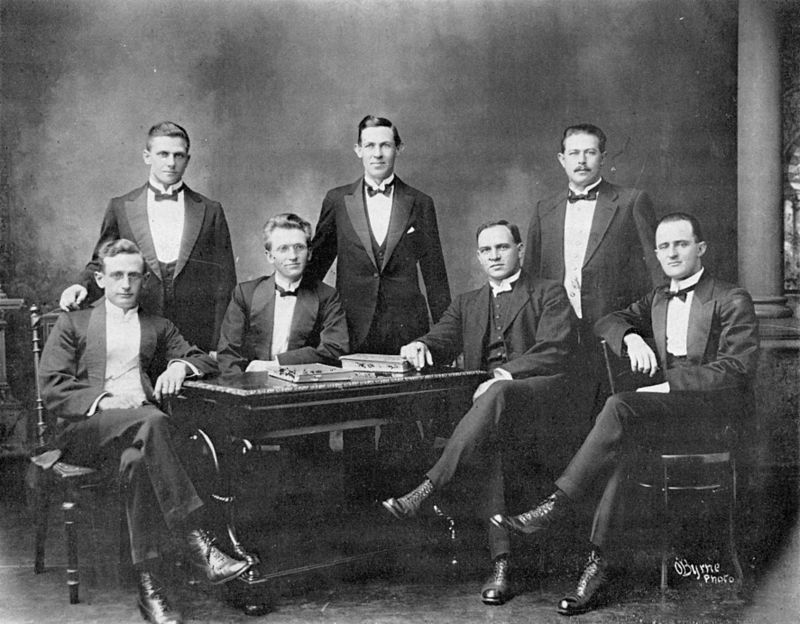
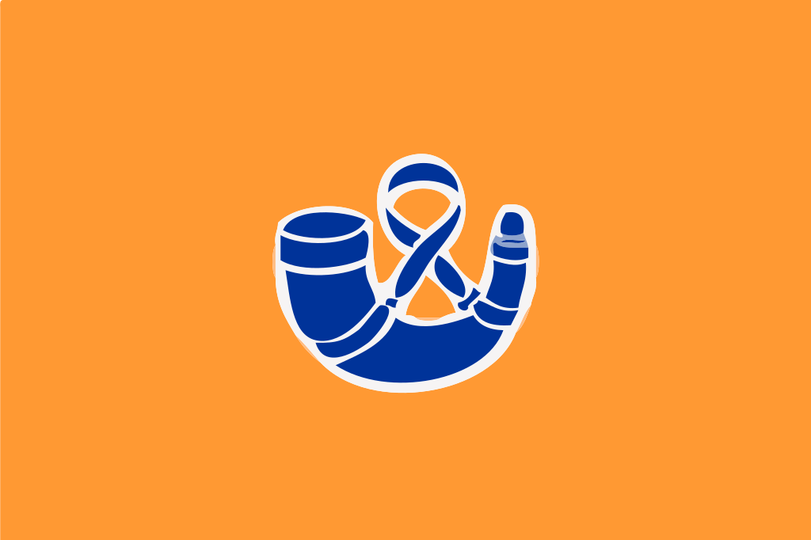

Африканерский национализм
Противостояние британцам, коренному населению и продуктам метисации рас привело к тому, что даже среди капских голландцев появились националистические элементы, пытавшиеся сохранить самобытную африканерскую культуру. Из интеллигенции, следовавшей этой идеологии, сложилось Африканерское братство - "Брудербонд".

Эта организация, созданная после Первой Мировой войны, начала подпольную борьбу с английским владычеством. В годы Второй Мировой войны появилось более радикальное объединение - Оссевабрандваг. Оно имело боевое крыло и открыто поддерживало нацистов, рассматривая их как союзников в борьбе с английским владычеством. После войны власть в стране захватила Национальная партия, контролировавшаяся Брудербондом и поглотившая Оссевабрандваг. Африканерский национализм стал господствующей идеологией в стране.

Впрочем, она пошла на уступки c местным британским населением, дабы справиться с общей угрозой - чернокожими, азиатами и метисами. Расовое разделение благ было организовано таким образом, что чем темнее был цвет кожи у человека, тем меньше прав он имел и тем хуже было качество услуг для него. Африканеры захватили власть над страной. Африканерский национализм существует и ныне - как ответная реакция на действия текущего правительства ЮАР, которое, по их мнению, начало обратную дискриминацию по отношению к ним.
Главная страница.
Ссылка на восьмёрки